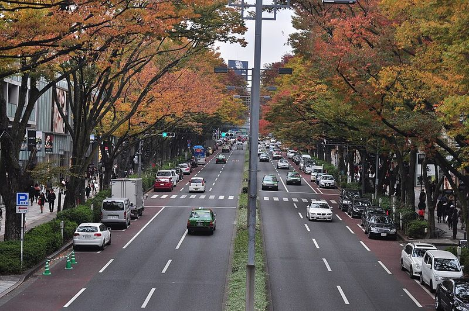
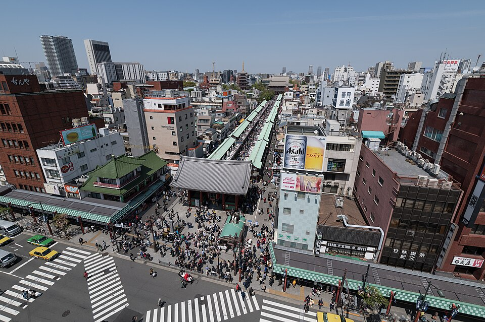
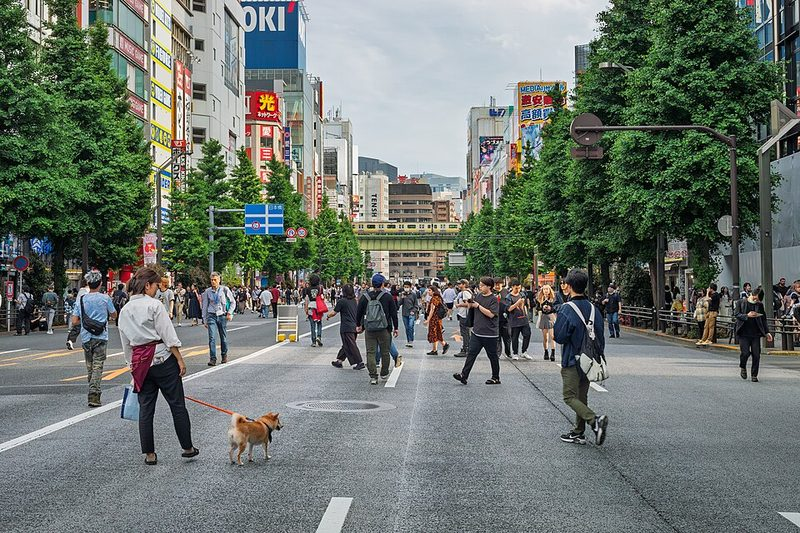

Tokyo, Mt. Fuji & Hakone (Wed Nov 25 – Wed Dec 2, 2026)
Jet-lag staircase for Chicago travelers: unhurried mornings, weekday mountains & coasters, protected afternoon recharge breaks, and confirmed cultural bookings.
2 Adults · Strictly No Pork & No Alcohol
All Currently Open Activities & Hotels Booked ✅
Protected 2–4 PM Recharge Daily
📊 8-Day Trip at a Glance
| Day | Scheduled Flow & Confirmed Bookings |
|---|---|
|
Wed Nov 25
Arrival · Shibuya
|
Land Haneda (17:45) → ✅ Booked JR-East Hotel Mets Shibuya → 2-Min Walk to LIFE Supermarket Shibuya Higashi |
|
Thu Nov 26
Mt. Takao & Shinjuku
|
Mt. Takao Cable Car (08:45) → Trail 1 Summit & Trail 4 Suspension Bridge → Summit Soba → Yakuo-in Temple → Hotel Nap → Omoide Yokocho Lanterns & Shinjuku Lights |
|
Fri Nov 27
Mt. Fuji & Fuji-Q
|
✅ Booked 08:15 Coach → Lake Kawaguchiko & Mt. Fuji Panoramic Ropeway (10:15) → Fuji-Q Launch Coasters (13:00 Zokkon & 14:00 Takabisha) → 14:15 Sit-Down Hoto/Park Lunch → ✅ Booked 16:18 Coach → Friday Night Dinner |
|
Sat Nov 28
Yanaka Old Town, 12:00 Sushi & Shibuya
|
Nezu Vermilion Torii Tunnel & Yanaka Ginza Wooden Old Town (09:45) → ✅ Booked 12:00 Sushi-Making Class (Asakusa) → Hotel Nap → SHIBUYA SKY Sunset (15:30) → Shibuya Crossing → Ebisu Chicken Ramen |
|
Sun Nov 29
Harajuku, Asakusa Kimono, Akihabara & Sumo
|
Meiji Jingu Forest Shrine (10:00) → Takeshita Street Crepes & Omotesando Lunch Graze → ✅ Booked 13:30 Maikoya Kimono + Matcha Tea → 15:00 Denboin-dori Edo Lanes & Senso-ji → 16:00 Car-Free Akihabara → ✅ Booked 17:30 Live Sumo Show |
|
Mon Nov 30
Hakone Loop & Mizunoto
|
08:50 GO Taxi Bag Drop at lyf Shibuya → 10:00 Odakyu Romancecar → 11:35 Mountain Train & Cable Car → 12:30 Hakone Ropeway & Owakudani → 13:30 Lake Ashi Pirate Ship → Cedar Trail → ✅ Booked 16:00 Mizunoto Ryokan |
|
Tue Dec 1
Bullet Train, Samurai, Kappabashi & PARCO 6F
|
Morning Balcony Onsen → ✅ Booked 11:14 Kodama 808 Bullet Train → 11:55 Tokyo Station Ramen Street → ✅ Booked 13:30 Samurai & Ninja Museum → 14:35 Kappabashi Knife/Kitchen Town → ✅ Booked 15:35 lyf Shibuya + PARCO 6F & Mega Donki → Shibuya Unagi & Omotesando Lights |
|
Wed Dec 2
Shinjuku Gyoen & Door-to-Door Taxi to Haneda
|
08:45 Leave Bags Free at lyf Shibuya → 09:05 Shinjuku Gyoen Autumn Maples → 10:35 Isetan Depachika Food Hall → 12:15 Door-to-Door Taxi/Uber from lyf Shibuya to Haneda T3 (16:50 Flight) |
🗓️ Day-by-Day Photos & Timed Schedule
Wed Nov 25
Arrival in Tokyo & Check-In at JR-East Hotel Mets Shibuya
📍 Haneda Airport → Shibuya (JR-East Hotel Mets Shibuya)
Land at Haneda Airport, take the 35-minute train ride straight to Shibuya New South Gate, check into JR-East Hotel Mets Shibuya, and grab late-night snacks downstairs before getting a full night's sleep.

JR-East Hotel Mets Shibuya

Shibuya Stream Riverwalk
Timed Schedule
-
17:45 Land at Haneda Airport (Terminal 3) ☀️ DaytimeClear immigration and customs using your Visit Japan Web QR codes (takes about 60–75 minutes) and withdraw ¥15,000 in cash at a 7-Eleven ATM in the arrival lobby.📋 Required: Pre-trip prep only (no separate ticket): Have your physical passports and Visit Japan Web QR codes ready, load ¥8,700 (~$57) onto Suica in Apple Wallet on each phone, and turn on Data Roaming at landing (your Xfinity Premium Unlimited includes 10GB 5G in Japan at $0 extra; wife's T-Mobile $50 10-Day / 15GB International Pass).
-
19:30 ✅ Booked Check-In: JR-East Hotel Mets Shibuya — Residential Style (Nights 1–5) ☕ Dedicated RestWalk 60 seconds outside Haneda Terminal 3 Customs to the Official Airport Taxi Stand (Lane 2) or hail via GO Taxi / Uber for a comfortable 25-minute door-to-door ride straight to JR-East Hotel Mets Shibuya (~¥7,800 / ~$50 fixed rate + ¥730 toll for the whole car, zero luggage hauling after a 14-hour flight!).📋 Required: ✅ Booked on Agoda ($1,213 w/ tax: 'Single for 2 People - Non-Smoking Residential Style' — renovated May 2025 with in-room microwave, 2-door freezer-fridge, and rain-shower booth). The Official Haneda Taxi Stand requires zero advance booking (takes Visa/Apple Pay/Suica; tell the driver 'Shibuya Fixed-Rate Taxi / 渋谷定額タクシー'). Present both physical passports at the 3rd-floor front desk to check in.
-
20:45 Night-1 Light Breakfast & Backup Lunch Stock-Up: LIFE Supermarket Shibuya Higashi (2-Min Walk, Open Till Midnight) 🏮 Sunset & NightWalk 2 minutes east across Meiji-dori to LIFE Supermarket Shibuya Higashi (1-26-22 Higashi, open until 24:00 midnight) to stock your in-room 2-door freezer-fridge and microwave. Skip buying coffee/creamer (your JR Mets 3F Lounge has free freshly brewed coffee/espresso & creamer!). Just grab light morning breakfast items (Pasco Chojuku English muffins, Kiri cream cheese, plain Greek/Bulgaria yogurt with zero gelatin, strawberries/bananas, salted boiled eggs) and 2–3 quick microwavable lunch backups (Salmon/Tuna-mayo onigiri & frozen Nissui Yaki-Onigiri)—no heavy dinners needed.📋 Required: Nothing (walk right in and pay with Suica, Apple Pay, credit card, or cash; request free plates & cutlery at JR Mets 3F front desk).
Thu Nov 26
Mt. Takao Autumn Hike, Afternoon Nap & Omoide Yokocho Lanterns
📍 West Corridor: Shibuya / Shinjuku ↔ Mt. Takao
Use your natural Day-2 early wake-up to ride the 08:45 Mt. Takao Cable Car without crowds, hike through crimson autumn maples, take a recharging nap back at your hotel across the 2:30 PM jet-lag dip, and explore Shinjuku's glowing lantern alleys at sunset.

Mt. Takao Cable Car

Mt. Fuji from Mt. Takao

Mt. Takao Autumn Maples

Summit Buckwheat Soba

Yakuo-in Mountain Temple

Omoide Yokocho Lantern Alley
Timed Schedule
-
05:30–07:35 🌅 Natural 05:30 Wake-Up + Unhurried Morning Routine & Breakfast ☀️ DaytimeGrab free espresso in the 3rd-floor lobby or breakfast at the 1st-floor Tully's Coffee, spend 20 minutes outside in natural morning daylight without sunglasses, and ride the Yamanote Line 7 minutes to Shinjuku.📋 Required: Nothing (just tap your Suica card for the ¥170 train ride to Shinjuku).
-
07:45–08:35 Keio Line Express Train: Shinjuku → Takaosanguchi (50 min seated) ☀️ DaytimeBoard the direct Keio Line train from Keio Shinjuku Station straight to Takaosanguchi Station at the base of the mountain.📋 Required: Nothing to book in advance. This is a regular commuter train that departs every 20 minutes—just tap your Suica card (¥430) at the Keio Shinjuku gate.
-
08:45–10:45 Mt. Takao Cable Car Up + Trail 1 Summit & Trail 4 Suspension Bridge ☀️ DaytimeRide Japan's steepest funicular cable car halfway up the mountain, walk the scenic forest ridge to the 599-meter summit viewpoint overlooking Mt. Fuji, and cross the Trail 4 suspension bridge.📋 Required: Nothing to book in advance. The Mt. Takao Cable Car does not take reservations—just tap your Suica card or buy a ¥950 round-trip ticket at the base station machine (departs every 15 minutes starting at 08:00). The national park and hiking trails are 100% free with no permit needed.
-
10:45–11:45 🍜 60-Min Summit Sit-Down Lunch: Hot Tororo Soba & Miso Dango ☕ Dedicated RestBeat the noon lunch crowd at a summit teahouse with hot buckwheat soba noodles in soy-bonito broth (naturally pork-free) and charcoal-grilled sweet miso rice dumplings.📋 Required: Nothing to book (summit teahouses are walk-in only; bring about ¥2,000 in cash per person since some mountain stalls are cash-only, and show your No-Pork Chef Card).
-
11:45–13:00 Yakuo-in Mountain Temple, Cable Car Down & Train Back to Shibuya ☀️ DaytimeWalk through the historic cliffside grounds of Yakuo-in Temple on your way back from the summit, ride the Cable Car down to save your knees, and take the Keio train back to Shibuya by 13:00.📋 Required: Nothing (Yakuo-in Temple is 100% free and open-air; use the return half of your Cable Car ticket down and tap Suica for the ¥430 train ride back).
-
13:15–16:00 🛌 2 Hr 45 Min Hotel Recharge & Power Nap (Beats the '2:30 PM Wall') ☕ Dedicated RestBecause 2:30 PM in Tokyo feels like 11:30 PM Chicago bedtime, head back to JR Mets Shibuya for a 30–45 minute power nap (set an alarm!) and freshen up before sunset.📋 Required: Nothing.
-
16:15–19:00 Omoide Yokocho Lantern Alley, 3D Giant Cat & Shinjuku Southern Terrace Lights 🏮 Sunset & NightWalk through Omoide Yokocho right as the red lanterns turn on at 16:15 sunset, spot the 3D Giant Cat billboard and Godzilla head in Kabukicho, and have dinner along the illuminated Shinjuku Southern Terrace promenade.📋 Required: Nothing (all lantern alleys, billboards, and winter light promenades are free public streets, and dinner spots are walk-in).
Fri Nov 27
Mt. Fuji Panoramic Ropeway, Lake Kawaguchiko & Fuji-Q Coasters
📍 Mt. Fuji Corridor: Lake Kawaguchiko & Fuji-Q Highland
Ride your booked 08:15 highway coach to Lake Kawaguchiko for an unhurried morning at the Mt. Fuji Panoramic Ropeway, head to Fuji-Q Highland to ride Zokkon (13:00) and Takabisha (14:00) on Priority Passes, sit down for a warm lunch during your 14:15–15:30 afternoon break, and nap on your booked 16:18 coach back to Shinjuku.

Mt. Fuji & Lake Kawaguchiko

Mt. Fuji Panoramic Ropeway

Lake View from the Gondola

Fuji-Q Highland & Mt. Fuji

Fuji-Q Launch Coaster

Fuji-Q Roller Coasters
Timed Schedule
-
06:15–08:00 🌅 Natural 06:15 Wake-Up + Breakfast & Short Ride to Busta Shinjuku ☀️ DaytimeHave breakfast at JR Mets Shibuya, take the 7-minute Yamanote Line train to Shinjuku South Exit, and take the elevator up to the 4th-floor Busta Shinjuku bus terminal by 08:05.📋 Required: Nothing (tap your Suica card for the ¥170 train ride from Shibuya to Shinjuku).
-
08:15–10:00 ✅ Booked: Highway Coach 1151 (Busta Shinjuku 08:15 → Kawaguchiko 10:00) ☕ Dedicated RestYour reserved one-way highway bus seats are confirmed on highwaybus.com (Line 110, Bus 1151).📋 Required: ✅ Already Booked (highwaybus.com, Bus 1151). Just pull up your mobile Web Ticket on your phone when boarding at Busta Shinjuku (4th floor).
-
10:15–12:10 Lake Kawaguchiko Promenade & Mt. Fuji Panoramic Ropeway (Mt. Tenjo 1,075m Summit Deck) ☀️ DaytimeEnjoy an unhurried morning along Lake Kawaguchiko and ride the 3-minute gondola up to the Mt. Tenjo observation deck and summit teahouse (grab warm roasted dango or a Fujiyama Cookie with snow-capped Mt. Fuji right in front of you), then take the local train 1 stop (3 minutes) to Fuji-Q Highland by 12:25.📋 Required: Nothing to book in advance (the ropeway does not sell timed reservations). Buy your ¥1,200 per adult round-trip gondola ticket on-site at the base station machine or window using Suica, card, or cash, then tap Suica (¥180) for the 1-stop train to Fujikyu-Highland Station.
-
12:30–14:15 Fuji-Q Highland Launch Coasters (13:00 Zokkon & 14:00 Takabisha Priority Passes) ☀️ DaytimeEnter Fuji-Q Highland with zero midday rush and ride Zokkon (Fuji-Q's flagship motorbike launch coaster at 13:00) and Takabisha (14:00) with Mt. Fuji rising directly behind the coaster tracks.📋 Required: 🎟️ 3-Part Ticket Setup: (1) Park entry is free—just pick up a free QR entry pass at the gate kiosk; (2) Buy individual coaster ride tickets (¥2,000 per coaster) at the red ticket machines inside the park; (3) ⏳ Advance Booking: Skip-the-line Priority Passes open Tuesday, Nov 24 at 3:00 AM Chicago time (3 days out) on fujiq.jp (target Zokkon 13:00 & Takabisha 14:00).
-
14:15–15:45 🍜 90-Min Sit-Down Lunch & Afternoon Recharge Break (Hoto Noodles / Food Stadium) ☕ Dedicated RestOnce both coasters are conquered, sit down across the 2:30 PM jet-lag window for a warm, unhurried lunch—either simmering Hoto flat noodles in pumpkin miso broth or tempura/curry inside Fuji-Q's Food Stadium / Highland Resort—before strolling to the highway bus gate.📋 Required: Nothing to book in advance (walk-in dining; show your No-Pork Chef Card when ordering).
-
16:18–17:55 🚌 ✅ Booked: Highway Coach 1118 Nap Back to Shinjuku (16:18 → 17:55) ☕ Dedicated RestYour reserved return highway coach is confirmed on highwaybus.com (Line 110, Bus 1118) departing right outside the Fuji-Q Highland park gate.📋 Required: ✅ Already Booked (highwaybus.com, Bus 1118). Show your mobile Web Ticket on your phone at the Fuji-Q Highland Highway Bus Stop by 16:08.
-
18:45 'Hana-kin' (Flower Friday) Wagyu & Sushi Night in Shibuya or Shinjuku 🏮 Sunset & NightDrop off your heavy mountain jacket at JR Mets Shibuya and head out for sizzling wagyu beef teppanyaki, sushi, or crispy chicken karaage.📋 Required: Nothing (walk-in dinner; show your No-Pork Chef Card when ordering).
Sat Nov 28
Yanaka Ginza Old Town & Nezu Torii Tunnel, 12:00 Asakusa Sushi Class, Hotel Nap, Sunset SHIBUYA SKY & Ebisu
📍 Northeast Morning (Nezu & Yanaka Ginza → 12:00 Asakusa Sushi) → Direct Ginza Line to Shibuya & Ebisu
Cluster Northeast Tokyo into one seamless morning: walk Nezu Shrine's vermilion torii tunnel and Yanaka Ginza's preserved pre-war wooden street, hop 10 minutes next door to Asakusa for your 12:00 PM Hands-On Sushi-Making Lunch Class, ride the direct Ginza Line back to Shibuya for a 75-minute hotel nap, and catch the 16:28 sunset from the 47-story SHIBUYA SKY rooftop.

12:00 Sushi-Making Class

SHIBUYA SKY Rooftop

Shibuya Scramble Crossing
Timed Schedule
-
07:15–09:15 🌅 Natural 07:15 Wake-Up + Relaxed Breakfast & Direct Train to Nezu / Nippori ☀️ DaytimeEnjoy an unhurried morning at JR Mets Shibuya, then take the JR Yamanote Line direct to Nippori Station (28 mins, 0 transfers) or the Tokyo Metro Chiyoda Line from Meiji-Jingumae direct to Nezu Station (21 mins, 0 transfers).📋 Required: Nothing (tap your Suica card ¥210 for the direct train ride to Nezu or Nippori).
-
09:45–11:40 🏮 Preserved Old Tokyo ('Yanesen'): Nezu Vermilion Torii Tunnel & Yanaka Ginza Wooden Old Town Stroll ☀️ DaytimeStart with a 20-minute scenic walk through Nezu Shrine's Otome Inari Vermilion Torii Tunnel (a winding hillside path of red torii gates over koi ponds—giving you the iconic Kyoto Fushimi Inari torii photo with zero crowds). Then stroll 10 minutes past the preserved 1910 wooden Yoshida Sake Store (Shitamachi Museum Annex) and down the Yuyake Dandan steps into pedestrian-only Yanaka Ginza—one of the only Tokyo neighborhoods that survived both the 1923 earthquake and WWII bombings untouched. Browse pre-war wooden merchant storefronts, woodblock crafts, and grab a light morning chestnut or matcha sweet (save your lunch appetite for your 12:00 PM sushi class!), then hop 10 minutes by taxi (~¥1,300 / $8.50) or 12 minutes by subway/bus straight to Asakusa.📋 Required: Nothing (100% free admission to Nezu's Otome Inari torii tunnel and Yanaka Ginza).
-
12:00–13:20 🍣 ✅ Booked & Confirmed: Hands-On Sushi-Making Class in Asakusa (12:00 PM) ☀️ DaytimeLearn to shape nigiri and sushi rolls alongside a friendly local chef and eat your creations as your Saturday sit-down lunch (100% pork-free and alcohol-free), then ride the direct Tokyo Metro Ginza Line end-to-end back to Shibuya (29 minutes seated, 0 transfers).📋 Required: ✅ Already Booked, Paid & Confirmed on Viator for Sat Nov 28 at 12:00 PM (Booking 217172P1). Show your mobile Viator voucher when you arrive at 11:50 AM.
-
14:00–15:15 🛌 75-Min Hotel Recharge Break at JR-East Hotel Mets Shibuya ☕ Dedicated RestRest your feet and take a 30–45 minute power nap in your hotel room across the 2:30 PM jet-lag window before walking 8.5 minutes across the Shibuya Stream skydeck to SHIBUYA SKY.📋 Required: Nothing.
-
15:30–17:00 SHIBUYA SKY 47-Story Open-Air Rooftop at Sunset (16:28) 🏮 Sunset & NightStep out onto the 360-degree open-air rooftop deck to watch golden hour, the silhouette of Mt. Fuji, and the Tokyo skyline lighting up at dusk.📋 Required: ⏳ Advance Booking Required: Tickets open Friday, Nov 13 at 9:00 AM Chicago time (14 days out) on SHIBUYA SKY Official or Klook—book the 15:30–16:00 entry slot (~¥2,500 per adult). Also bring a ¥100 coin for the mandatory refundable locker on the 46th floor, where bags, hats, and tripods must be stored before stepping onto the roof.
-
17:15–19:30 Shibuya Scramble Crossing Neon Walk + Ebisu Tori-Paitan Chicken Ramen 🏮 Sunset & NightWalk across iconic Shibuya Scramble Crossing under the giant neon video screens, then take the Yamanote Line 1 stop (2 minutes) to Ebisu for rich, creamy chicken-broth ramen (tori-paitan) and crispy chicken gyoza.📋 Required: Nothing (Shibuya Scramble Crossing is a free public intersection, and Ebisu ramen shops are walk-in; tap Suica ¥150 for the 1-stop train).
Sun Nov 29
Meiji Jingu, Harajuku & Omotesando, 13:30 Kimono & Tea, Edo Denboin-dori, Akihabara & 17:30 Sumo
📍 Harajuku & Omotesando → Direct Ginza Line to Asakusa (13:30 Kimono & Tea + Denboin-dori) → Car-Free Akihabara → Shinjuku (17:30 Sumo)
Sleep in until 08:30 AM, take the 2-minute hop to Meiji Jingu Forest Shrine, graze Takeshita Street crepes and Omotesando/Cat Street for lunch, then ride the direct Ginza Line once to Asakusa for your 1:30 PM Maikoya Silk Kimono & Tea Ceremony, stroll preserved Edo-style wooden Denboin-dori & Senso-ji, hit Car-Free Akihabara at 4:00 PM, and finish with your 5:30 PM Live Sumo Show & Hot-Pot Dinner in Shinjuku.

Meiji Jingu Forest Torii

Takeshita Street Harajuku

Omotesando Boulevard

13:30 Kimono & Tea Ceremony

Senso-ji Temple (Asakusa)

Denboin-dori & Nakamise Stalls

Akihabara Car-Free Sunday

17:30 Live Sumo Show
Timed Schedule
-
08:30–09:50 🌅 Natural 08:30 Wake-Up + Relaxed Coffee at JR Mets & 2-Min Ride to Harajuku ☀️ DaytimeEnjoy a slow Sunday morning at JR Mets Shibuya, then take the JR Yamanote Line 1 stop (2 minutes) to Harajuku Station.📋 Required: Nothing to book (tap your Suica card ¥150 for the 1-stop train ride to Harajuku).
-
10:00–11:10 Meiji Jingu Forest Shrine (Shrine #1 of 2) ☀️ DaytimeWalk the peaceful gravel paths under giant cedar torii gates inside a 170-acre forest—Sunday morning is also the best time to spot traditional Shinto wedding processions in the courtyard.📋 Required: Nothing (100% free admission with no ticket or reservation required).
-
11:10–12:45 🍓 Takeshita Street Crepes & Omotesando / Cat Street Lunch Graze ☀️ DaytimeWalk down colorful Takeshita Street for warm strawberry-custard crepes, then stroll tree-lined Omotesando Boulevard and pedestrian Cat Street for a casual café brunch or street snacks before boarding the direct Tokyo Metro Ginza Line from Omotesando Station straight to Asakusa (27 mins, 0 transfers).📋 Required: Nothing (free pedestrian streets and walk-in crepe stands/cafes; tap your Suica card ¥250 for the direct Ginza Line subway to Asakusa).
-
13:30–15:00 👘🍵 ✅ Booked: Maikoya Asakusa Silk Kimono + Matcha Tea Ceremony (1:30 PM, $105) ☕ Dedicated RestFemale staff dress you in silk kimonos inside a women-only dressing area over your base layers (hijab stays completely undisturbed, 13:30–14:00), followed by a 60-minute seated English Matcha Tea Ceremony with traditional wagashi sweets in a tatami room (14:00–15:00) right across the afternoon recharge window.📋 Required: ✅ Already Booked on Viator (Booking 51440P108 for 1:30 PM, $105). Show your mobile Viator voucher at Maikoya Asakusa (1-12-2 Asakusa). Prep tip: wear a thin fitted long-sleeve top and leggings so they can wrap the kimono cleanly over your clothes.
-
15:00–15:50 🏮 Outdoor Silk Kimono Stroll: Preserved Edo Wooden Denboin-dori (伝法院通り), Nishi-Sando, Nakamise & Senso-ji (Temple #2 of 2) ☀️ DaytimeKeep your silk kimonos on after tea and step right onto Denboin-dori (preserved Edo-style wooden merchant storefronts with overhanging clay-tiled roofs and painted signboards) and Nishi-Sando's traditional wooden arcade, plus Nakamise-dori and 645 AD Senso-ji Temple, before returning your kimonos to Maikoya by 15:50.📋 Required: Nothing (Denboin-dori, Nishi-Sando, Nakamise Street, and Senso-ji Temple are 100% free and open 24/7; return your kimonos to Maikoya by 15:50).
-
16:00–16:50 Akihabara Sunday-Only 'Hokoten' Car-Free Boulevard at Sunset 🏮 Sunset & NightEvery Sunday afternoon until 17:00, Akihabara closes its 6-lane main avenue (Chuo-dori) to traffic—walk right down the middle of the street as the neon anime and electronics towers light up at dusk, then ride the JR Chuo-Sobu Line 18 minutes to Shinjuku.📋 Required: Nothing (the Sunday pedestrian boulevard is 100% free; just tap your Suica card for the short train rides to Akihabara and onward to Shinjuku).
-
17:30–19:15 ✅ Booked: Seated Live Sumo Show & Chicken Hot-Pot Dinner (5:30 PM, Shinjuku) 🏮 Sunset & NightWatch live sumo demonstrations and matches between former professional wrestlers, learn the rules in English, take a photo in the ring, and eat a warm chicken chanko-nabe hot-pot dinner.📋 Required: ✅ Already Booked on Viator (Booking 5610033P1 for 5:30 PM). Show your mobile Viator voucher at the Shinjuku venue door at 17:15.
-
19:30 Onward Optional Evening Dessert Stroll & Pack Your 1-Night Backpack for Hakone 🏮 Sunset & NightFinishing dinner by 19:15 gives you a relaxed Sunday evening to grab dessert near Shibuya Stream and pack a light overnight backpack for Monday's trip to Hakone.📋 Required: Quick prep at your hotel: Pack 1 night of clothes and toiletries into a small backpack for Hakone so you can leave your two large suitcases behind in Shibuya tomorrow morning.
Mon Nov 30
Hakone Mountain Train, Volcanic Gondola, Lake Ashi Ship, Cedar Trail & Mizunoto Ryokan
📍 Shibuya Check-Out → Hakone Golden Loop → Kowakidani Onsen (Mizunoto)
Sleep in until 08:30 AM, hop in a 4-minute ($6) taxi at 08:50 to drop your two large suitcases at lyf Shibuya while carrying only a light 1-night backpack, ride the 10:00 AM Romancecar to Hakone-Yumoto, and complete the classic Hakone Golden Loop (Mountain Switchback Train → Cable Car → Owakudani Ropeway → Lake Ashi Pirate Ship → Lunch & 400-Year Cedar Trail → H-Line Bus) to check into Mizunoto by 16:00.

Hakone Ropeway Gondola

Owakudani Volcanic Valley

Lake Ashi Sightseeing Ship

Old Tokaido Cedar Trail

Mizunoto Suikanosho Room

Mizunoto Hinoki Balcony Bath
Timed Schedule
-
08:50–09:35 🌅 08:50 Express Check-Out of JR Mets & 4-Min ($6) GO Taxi Suitcase Drop at lyf Shibuya ☀️ DaytimeSleep in an extra 35 minutes! 🎒 Pack Ultra-Light for 1 Night: Mizunoto Ryokan provides pajamas (yukata), towels, toothbrushes, razors, skincare, shampoo, and hairdryers—so pack ONLY 1 change of clothes + phone chargers in a single small backpack and leave everything else inside your two large suitcases! At 08:50, hop in a 4-minute (~¥900 / $6) GO Taxi from JR Mets Shibuya straight to the 24-hour front desk of lyf Shibuya Tokyo (4-3 Udagawacho) to drop both large suitcases in 3 minutes, then ride 7 minutes from Shibuya to Shinjuku with only your small backpack.📋 Required: No advance booking required. Just show your Dec 1 lyf Shibuya Priceline confirmation at lyf's 24-hour desk to store your suitcases for free, and tap Suica (¥170) for the train to Shinjuku.
-
10:00–11:27 Leg 0 — Odakyu Romancecar 'Hakone 3 (GSE)' Panoramic Express (Shinjuku → Hakone-Yumoto · Car 03, Seats 9C & 9D) ☀️ DaytimeRelax in your reserved right-side panoramic window seats (Carriage 03, Seats 9C & 9D — Mt. Fuji view side, unobstructed odd-row glass) on Odakyu's flagship red GSE express train from Shinjuku straight to Hakone-Yumoto Station (zero train transfers).📋 Required: ✅ BOOKED (Booking #00058 + EMot 2-Day Group Freepass). What you need to board: (1) Open EMot on your iPhone, tap 'Activate' on your 2-Day Hakone Freepass (Group), and scan the live QR code at the Odakyu Shinjuku ticket gate (needs cell data; screenshots not accepted); (2) Walk straight onto Car 03, Seats 9C & 9D (no ticket counter exchange needed)—keep your e-Romancecar confirmation email/screenshot (Booking #00058) AND the physical credit card ending in 9554 with you on board.
-
11:35–12:25 Leg 1 — Hakone Tozan Mountain Switchback Train & Cable Car (Hakone-Yumoto → Gora → Sounzan) ☀️ DaytimeWalk straight across the platform at Hakone-Yumoto Station to board the scenic mountain train as it zig-zags up three switchbacks through the forest to Gora (40 mins, departs every 15–20 mins), then hop onto the funicular Cable Car up to Sounzan (10 mins).📋 Required: 100% covered by your 2-Day Hakone Freepass (just show/scan your Freepass QR code at the gate—no separate reservation needed).
-
12:30–13:20 Leg 2 — Hakone Ropeway Over Owakudani Volcanic Valley (+ 25-Min Summit Break) ☀️ DaytimeBoard the aerial gondola (cabins arrive continuously every 60 seconds) and soar 130 meters above steaming sulfur vents with views of Mt. Fuji. Step off at Owakudani summit station for 25 minutes to see the volcanic crater and try the famous black hot-spring eggs, then continue down to Togendai Port.📋 Required: 100% covered by your 2-Day Hakone Freepass (if high winds ever pause the gondola, your Freepass also covers the backup Tozan bus at no extra cost; bring ¥500 cash if you want a bag of 5 black volcanic eggs).
-
13:30–14:05 Leg 3 — Lake Ashi Sightseeing Pirate Ship Cruise (Togendai → Moto-Hakone, 35 min) ☀️ DaytimeWalk straight from the Togendai ropeway terminal onto the Lake Ashi Sightseeing Ship (departs every 30–40 mins) for a 35-minute cruise across volcanic Lake Ashi past the red lakeside torii gate of Hakone Shrine.📋 Required: 100% covered by your 2-Day Hakone Freepass (scan your Freepass QR code at the pier).
-
14:05–14:55 ☕ 50-Min Lakeside Bakery & Soba Lunch at Moto-Hakone ☕ Dedicated RestSit down along the Lake Ashi waterfront at Bakery & Table Hakone or a lakeside soba noodle cafe before your afternoon forest walk.📋 Required: Nothing (walk-in lakeside cafes and bakeries; show your No-Pork Chef Card).
-
14:55–15:40 Old Tokaido Highway 400-Year Cedar Avenue Walk (45 min flat/gentle) ☀️ DaytimeWalk a peaceful, preserved stretch of the ancient stone highway between Edo and Kyoto, shaded by towering 400-year-old giant cedar trees.📋 Required: Nothing (100% free public forest trail with no ticket or permit required).
-
16:00 Onward Leg 4 & Check-In — H-Line Bus (18 min) to ✅ Booked Mizunoto Ryokan (Private Hinoki Balcony Bath) 🏮 Sunset & NightRide the Hakone Tozan H-Line Bus 18 minutes from Moto-Hakone Port to Kowakidani Station (departs every 15–20 mins, 100% covered by your Freepass), then hop on the free 3-minute hotel shuttle. Soak anytime in your 35 m² Suikanosho room's golden Hinoki cypress tub on the balcony, try the 3 free outdoor maple-garden private hot-spring huts, and enjoy complimentary post-bath ice pops and 22:30 Yonaki Soba ramen.📋 Required: ✅ Already Booked on Priceline ($380 with tax). The H-Line bus is covered by your Hakone Freepass. Present both physical passports at check-in (there is a standard ¥150 per person local hot-spring tax paid at the desk, and the 3 outdoor private bath huts require no reservation—just flip the wooden sign on the door).
Tue Dec 1
33-Min Bullet Train, Ramen Street, Booked Samurai Museum, Kappabashi & Shibuya PARCO 6F
📍 Mizunoto → Odawara Bullet Train → Tokyo Station → Asakusa & Kappabashi → Shibuya PARCO 6F
Enjoy a morning Hinoki balcony hot-spring soak at Mizunoto, ride your booked 11:14 AM Kodama 808 Shinkansen Bullet Train (Res #2000) 34 minutes from Odawara to Tokyo Station for Ramen Street lunch, join your booked 1:30 PM Samurai & Ninja Museum tour in Asakusa, walk 6 minutes to Kappabashi Knife & Kitchen Street, ride the direct Ginza Line back to check into 4-star lyf Shibuya right across from Shibuya PARCO 6F (Nintendo TOKYO & Pokémon Center), Miyashita Park & Mega Donki, and celebrate with an Unagi dinner.

11:30 Shinkansen Bullet Train

Tokyo Station Ramen Street

13:30 Samurai & Ninja Museum

Charcoal-Grilled Unagi (Eel)

Winter Holiday Illuminations
Timed Schedule
-
08:30–10:50 🌅 Morning Balcony Onsen Soak at Mizunoto & Ride Down to Odawara ☀️ DaytimeEnjoy one last morning soak in your balcony hot-spring tub (plus free probiotic drinks in the lounge), check out by 10:00 AM, and take the Hakone Tozan Train or bus (~35 minutes) down to Odawara Station.📋 Required: Nothing to book—check out by 10:00 AM and use Day 2 of your Hakone Freepass for the train or bus ride to Odawara Station.
-
11:14–11:48 ✅ Booked: Tokaido Shinkansen 'Kodama 808' Bullet Train (Odawara → Tokyo · Res #2000) ☀️ DaytimeExperience Japan's flagship Series N700 Shinkansen bullet train on a smooth 34-minute nonstop run straight from Odawara into Tokyo Station.📋 Required: ✅ BOOKED & PAID (Smart EX Reservation #2000 · ¥6,820 for 2 Adults Ordinary Reserved · Visa 9554). Once seat numbers finalize after 5:30 AM JST (3:30 PM CST), open Reservation #2000 on Smart EX to check/swap to Car 12 Seats D & E ($0 free change) and save the QR-tickets to Apple Wallet.
-
11:55–13:05 Tokyo Station Ramen Street & Gransta Food Hall Lunch ☀️ DaytimeChoose from 8 famous ramen counters plus wagyu bento, tempura, and sushi stalls right outside the Shinkansen gate inside Tokyo Station (pick chicken, soy-sauce shoyu, seafood, or vegan ramen and skip pork tonkotsu; every ramen counter has under-seat/wall baskets for your light 1-night Hakone backpack), then ride the subway 15 minutes to Asakusa.📋 Required: Nothing to book (Ramen Street shops do not take reservations—just order on the English touchscreen vending machine at the shop entrance using Suica or cash, and show your No-Pork Chef Card).
-
13:30–14:30 ✅ Booked: Samurai & Ninja Museum Guided Tour in Asakusa (1:30 PM, $45) ☀️ DaytimeJoin your 60-minute interactive English tour with samurai armor and helmet try-on, replica katana sword photos, and real metal ninja star (shuriken) target practice. 🎒 Zero-Backtrack Bag Tip: Pop your 1-night Hakone backpack into a ¥400 Suica locker at Asakusa/Tawaramachi Station (or behind the Samurai Museum reception desk during your tour) so you walk hands-free and ride the direct Ginza Line straight from Tawaramachi to lyf Shibuya at 15:35 with zero backtrack to Tokyo Station!📋 Required: ✅ Already Booked on Viator (Booking 51440P80 for 1:30 PM, $45). Show your mobile Viator voucher at the museum front desk by 13:20.
-
14:35–15:35 🔪 Kappabashi Knife & Kitchen Town (6-Min Walk from Samurai Museum) ☀️ DaytimeWalk 6 minutes west to Tokyo's century-old culinary street (open until 17:30)—completely hands-free if you left your small 1-night backpack in the Tawaramachi/Asakusa Station ¥400 Suica locker! Watch Japanese master smiths at Kama-Asa or Tsubaya hand-engrave your name in Kanji onto a Japanese chef's knife ($50–$95 tax-free—ready in 10 minutes to pack into your checked suitcases at lyf Shibuya tonight!), browse famous ultra-realistic Japanese plastic food-sample (Sampuru) shops, and pick up $3–$12 ceramic ramen and matcha bowls at Dengama.📋 Required: ✅ Locked In ($0 entry, no advance tickets needed; bring your physical passport for 10% tax-free shopping at the register).
-
15:35–18:15 🏨 ✅ Direct Ginza Line to lyf Shibuya Check-In + Shibuya PARCO 6F (Nintendo TOKYO & Pokémon Center), Miyashita Park & Mega Donki ☕ Dedicated RestGrab your 1-night backpack from the Tawaramachi Station locker and take the direct Tokyo Metro Ginza Line straight from Tawaramachi to Shibuya (29 mins, 0 transfers, ¥250—zero backtracking to Tokyo Station!) to check into 4-star lyf Shibuya Tokyo (4-3 Udagawacho), where your two checked suitcases are waiting. Then spend 2 unhurried hours literally 1 minute across the street at Shibuya PARCO 6F 'Cyberspace Shibuya' (flagship Nintendo TOKYO with Japan-exclusive merch, Pokémon Center Shibuya with life-size Mewtwo tank, Capcom Store & Jump Shop), Miyashita Park Rooftop, and Mega Don Quijote (4-min walk) to pack tax-free souvenirs straight into your checked bags.📋 Required: ✅ Hotel Already Booked on Priceline ($194 with tax), and Shibuya PARCO 6F / Miyashita Park / Mega Donki are 100% free walk-in ($0 entry; bring physical passports for hotel check-in and 10% tax-free shopping).
-
18:30–20:30 Shibuya Charcoal-Grilled Unagi (Eel) Finale Dinner & Omotesando / Miyashita Park Champagne-Gold Illuminations 🏮 Sunset & NightStay right in your Shibuya / Omotesando neighborhood with zero cross-town subway backtracking! Celebrate your final night in Tokyo with charcoal-grilled unagi (freshwater eel) over steamed rice right in Shibuya (such as Hitsumabushi Nagoya Bincho at Shibuya Stream / Hikarie or Matsukawa at Shibuya Scramble), followed by an unhurried evening stroll beneath the 900,000 champagne-gold winter lights along tree-lined Omotesando Boulevard and Miyashita Park.📋 Required: Nothing (Omotesando's champagne-gold illuminations and Miyashita Park lights are 100% free public walkways right in your neighborhood, and Shibuya unagi restaurants are walk-in; show your No-Pork / No-Alcohol Chef Card when ordering).
Wed Dec 2
Shinjuku Gyoen Autumn Maples, Isetan Depachika Food Hall & Door-to-Door Taxi to Haneda
📍 lyf Shibuya (Free Bag Hold) → Shinjuku Gyoen & Isetan → Door-to-Door Taxi/Uber to Haneda (16:50 Flight)
Check out of lyf Shibuya at 08:45 and leave your heavy suitcases at the front desk for free, ride 7 minutes hands-free to walk under the crimson autumn maples inside Shinjuku Gyoen at 09:05 and pick up lunch and gourmet edible gifts inside Isetan's famous basement food hall, then hop back to lyf Shibuya at 12:00 to pack your gifts and take a 25-minute door-to-door Airport Taxi / GO Taxi / Uber (~$50 total) straight to Haneda Terminal 3 for your 16:50 flight home.

Shinjuku Gyoen Pavilion

Shinjuku Gyoen Autumn Maples

Tempura & Depachika Food Hall
Timed Schedule
-
07:30–08:50 🌅 Wake Up at lyf Shibuya, Check Out & Leave Suitcases Free at Front Desk ☀️ DaytimeCheck out of lyf Shibuya and leave both of your heavy suitcases with the 24-hour front desk for free (zero dragging suitcases into a train station or paying for a locker!), then take the 7-minute JR Yamanote Line ride hands-free to Shinjuku.📋 Required: Nothing to book in advance (free luggage hold at lyf Shibuya front desk; tap Suica ¥170 for the 7-minute train to Shinjuku).
-
09:05–10:10 Shinjuku Gyoen National Garden (Late-Autumn Maple Foliage) ☀️ DaytimeEnter right after the 09:00 AM opening for a peaceful 60-minute flat walk across traditional pond bridges, tea pavilions, and bright red late-November Japanese maples.📋 Required: No advance reservation required (timed entry tickets are only used during spring cherry-blossom season). Simply tap your Suica card directly on the turnstile gate (¥500 per adult; opens at 09:00 AM).
-
10:10–10:35 ☕ 25-Min Coffee & Pastry Break ☕ Dedicated RestStop at a café along the 5-minute walk between Shinjuku Gyoen and Isetan Department Store before the food hall doors open.📋 Required: Nothing (walk-in café).
-
10:35–11:45 Isetan Shinjuku 'Depachika' Underground Food Hall (Lunch & Souvenirs) 🏮 Sunset & NightBrowse Tokyo's most famous department-store basement food hall for freshly fried shrimp and vegetable tempura, wagyu beef croquettes (confirm no pork), fruit daifuku mochi, and beautifully boxed matcha cookies, then hop 7 minutes back to lyf Shibuya to slip your souvenir boxes into your suitcases.📋 Required: Nothing for entry (free admission to the basement food hall; keep your physical passport handy if you spend ¥5,500+ on souvenir sweets and want the 10% tax-free refund).
-
12:15 🚕 25-Min Door-to-Door Airport Taxi / GO Taxi / Uber from lyf Shibuya to Haneda Terminal 3 (16:50 Flight) ☀️ DaytimeHave the lyf Shibuya front desk call a Fixed-Rate Airport Taxi (or hail via GO Taxi / Uber in 2 minutes) right to the hotel door—the driver loads all of your heavy suitcases into the trunk and drives you straight to Haneda Terminal 3 Departures in 25–30 minutes (~¥7,800 / ~$50 fixed rate + ¥730 toll for the whole car).📋 Required: No advance reservation needed—just ask lyf Shibuya front desk or tap GO Taxi / Uber at 12:10 PM, and have your physical passports and boarding passes ready at Haneda Terminal 3.